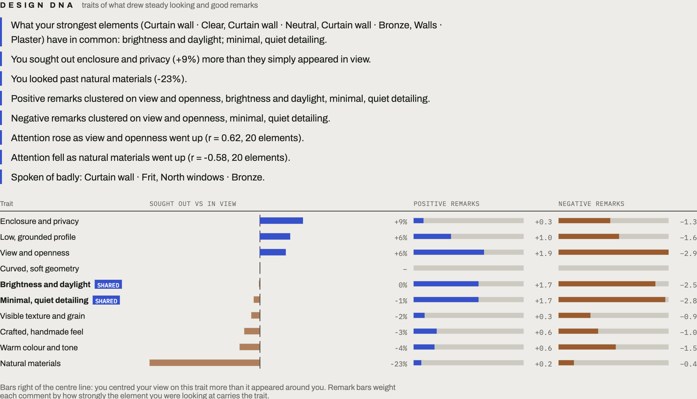

Decode walk · design DNA

From curved geometry to privacy, scored 0 to 1 in the metadata.
Bars right of centre: the person centred their view on that trait more than it surrounded them.
Each remark is weighted by how strongly the element in view carries the trait.
Visual Vibes · glazing study · report